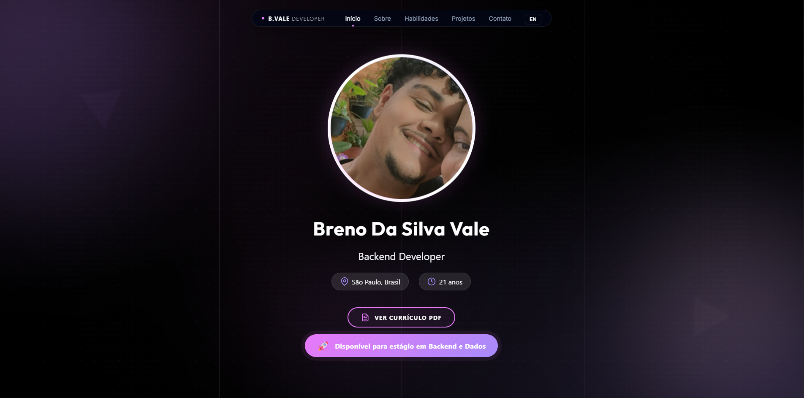
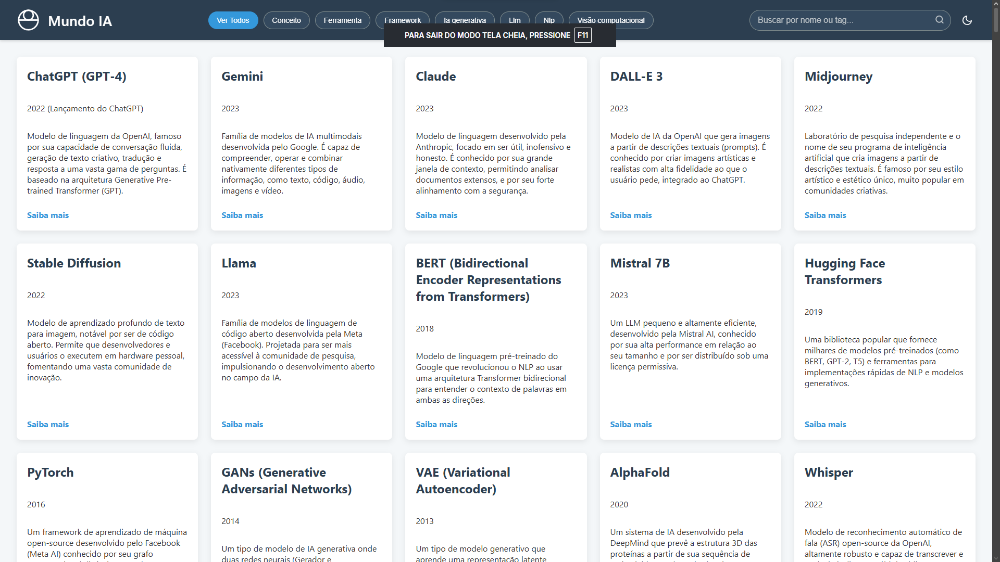

Breno Da Silva Vale
Backend Developer
São Paulo, Brasil
21 anos
Backend Developer
Meu nome é Breno da Silva Vale, sou estudante de Engenharia de Software, com foco no desenvolvimento de soluções tecnológicas inovadoras. Tenho grande interesse por programação, engenharia de dados e análise de dados, utilizando tecnologia e pensamento lógico para transformar desafios complexos em soluções inteligentes e eficientes.
Minha trajetória profissional teve início como Assistente de Vendas, evoluindo posteriormente para a posição de Vendedor Interno. Essa foi a minha primeira escolha após concluir o ensino médio, motivada pela necessidade de contribuir com minha família. Durante esse período, desenvolvi habilidades importantes como comunicação, negociação, proatividade e foco em resultados.
Apesar de ter iniciado minha carreira na área comercial, nunca perdi o interesse pela tecnologia e pelo desejo de atuar na área que realmente me motiva. Ao longo do tempo, mantive meus estudos de forma contínua, buscando aprimorar meus conhecimentos e me preparar para uma transição sólida para a área de tecnologia.
Hoje, sigo dedicado ao meu desenvolvimento acadêmico e profissional, unindo minha experiência prática com a formação em tecnologia para construir soluções cada vez mais eficientes, sempre com foco em aprendizado contínuo, evolução e geração de valor.
Cruzeiro do Sul Virtual
Curso voltado ao desenvolvimento de software com foco em programação, arquitetura de sistemas, engenharia de requisitos, testes e boas práticas de desenvolvimento.
1º Semestre | Conclusão: 2029Tecnologias que utilizo no dia a dia
Iniciei meus estudos em programação e desenvolvimento de software, aprendendo lógica de programação, HTML, CSS e JavaScript.
Atualmente curso Engenharia de Software, aprofundando conhecimentos em desenvolvimento, banco de dados e engenharia de software.
Desenvolvi uma aplicação web para captação de clientes no setor automotivo, aplicando princípios de Engenharia de Software. Foco em performance, escalabilidade, manipulação dinâmica de dados (JavaScript), arquitetura organizada e integração com APIs (Google Maps, WhatsApp), simulando um ambiente de produção.
Buscando estágio e constantemente evolução na área de tecnologia, estudando novas ferramentas, boas práticas e tendências do mercado.

Nenhum curso em andamento
Fundamentos da plataforma Databricks para engenharia e análise de dados em larga escala.

Nenhum curso em andamento
Curso concluído.
Curso concluído.
Curso concluído.
Curso concluído.
Desenvolvimento de uma aplicação prática utilizando a API do Google Gemini e tecnologias web.
Primeiros passos com Python aplicado a Data Science, utilizando bibliotecas como Pandas.
Boas-vindas ao campo de análise de dados, explorando oportunidades e habilidades necessárias.
Guia sobre carreira, mercado de trabalho e os primeiros passos para se tornar um desenvolvedor.
Aprofundamento em fórmulas, tabelas dinâmicas e ferramentas de análise de dados no Excel.

Nenhum curso em andamento
Introdução aos conceitos e ferramentas de Data Science, análise e visualização de dados.
Fundamentos essenciais da lógica de programação e construção de algoritmos.
Desenvolvimento de habilidades de comunicação eficaz no ambiente profissional e técnico.

Nenhum curso em andamento
Excelência em normas gramaticais e ortográficas da língua portuguesa.
Domínio de ferramentas digitais e IA para produtividade acadêmica.
Fundamentos éticos e estratégicos no ambiente digital.
Análise profunda dos elementos da comunicação.
Uso de tecnologias para aprimoramento textual.
Técnicas avançadas de interação com modelos de IA.
Desenvolvimento responsável e seguro de soluções de IA.
Visão panorâmica sobre as tendências da tecnologia e inteligência artificial.

Aplicação front-end desenvolvida para apresentação profissional, com foco em clareza, organização da informação e experiência do usuário.
Estruturada em seções modulares (Sobre, Habilidades, Projetos e Contato), com navegação intuitiva e design responsivo, garantindo consistência entre diferentes dispositivos.
O projeto evidencia boas práticas de desenvolvimento, organização de layout e construção de interfaces modernas, servindo como hub central para exposição de projetos e evolução técnica.
Tecnologias: HTML, CSS e JavaScript

Desenvolvimento do Mundo IA, uma aplicação front-end interativa criada durante a Imersão Dev da Alura, com foco em organização de dados e experiência do usuário.
A aplicação implementa busca e filtragem dinâmica por nome, tags e categorias, com renderização de componentes baseada em JavaScript e interface responsiva.
Construída com HTML, CSS e JavaScript, aplicando conceitos de manipulação de DOM, estruturação de dados e boas práticas de desenvolvimento front-end.
Aplicação front-end estruturada com foco em escalabilidade, performance e separação de responsabilidades, simulando cenários reais de fluxo de usuários e processamento de dados em tempo real.
Implementa manipulação dinâmica de dados, gerenciamento de estado na interface, otimização de renderização via Intersection Observer e integração com serviços externos (Google Maps e WhatsApp).
Desenvolvido com HTML, CSS e JavaScript, seguindo boas práticas de engenharia e preparado para evolução com back-end, APIs REST, persistência de dados e autenticação.